Images of the Russian Empire: Colorizing the Prokudin-Gorskii photo collection
Table of Contents
1 Introduction
For this project, we are supposed to, given an input of 3 grayscale images representing the intensity of each color channel in a RGB space, recreate a colored images. This idea was envisioned by Sergei Mikhailovich Prokudin-Gorskii around 1907. The pictures were taken with filters (glass plates) for each of the color channels, which enabled posterior aligning. For more info, check the Library of Congress site.
2 Setting up
We were given 9 image sets to execute our program in. Some were of lesser size while some were .tif files of incredible dimensions and large intensity value mapping (not our usual [0 ... 255]). E. g.:


The first thing we ought to do is split the image and stack them as an RGB photo to understand how we can align them properly. We can use the following python code to do so:
import skimage.io as io import numpy as np img = io.imread("./cathedral.jpg") height = int(len(img)/3) B = img[:height] G = img[height:2*height] R = img[2*height:3*height] stacked = np.dstack([R, G, B]) io.imsave("simple_align.jpg", stacked)

Obviously, the images won't be aligned properly, which means we have to find a way to calculate an optimal movement for each channel. We are proposed by the project specification to do this both with a naive method (exhaustion) or optimized (pyramid method) , which is needed for large images.
3 Naive Methods
The naive method consists of an exhaustion routine to find the displacement which results in the best correlation value. There are two proposed methods in the specification: Sum of Squared Differences and Normalized Cross Correlation. Both are then used as the value function in a naive search that moves a given channel in a [-15:15, -15:15] space and compares it to another given channel. My algorithm compares the Green channel to the Blue channel, applies the best displacement on the Green one, compares the Red channel to the resulted modification and applies the final transformation, leaving the Blue channel untouched.
3.1 Sum of Squared Differences
This function goes as follows:
def SSD(A, B): return np.sum(np.sum((A-B)**2))
Applying this to the smaller images had the following result:
python3 main.py ./cathedral.jpg ./cathedral_naive_SSD.jpg --naive python3 main.py ./monastery.jpg ./monastery_naive_SSD.jpg --naive python3 main.py ./tobolsk.jpg ./tobolsk_naive_SSD.jpg --naive
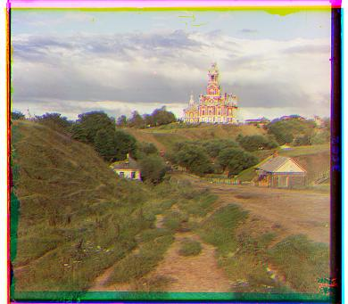
R: (2, 9); G: (0, 3); B: (0, 0) – Runtime: 0.43 Seconds
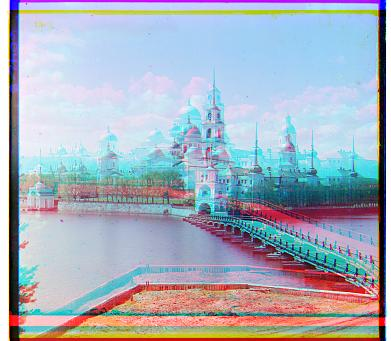
R: (2, -15); G: (1, -3); B: (0, 0) – Runtime: 0.43 Seconds
R: (4, 7); G: (2, 3); B: (0, 0) – Runtime: 0.43 Seconds
3.2 Normalized Cross Correlation
This function goes as follows:
def NCC(A, B): top = np.sum((A - np.mean(A))*(B - np.mean(B))) bottom = np.sum(np.sqrt((np.sum(A - np.mean(A))**2)*(np.sum(B - np.mean(B))**2))) return top / (bottom+1)
Applying this to the smaller images had the following result:
python3 main.py ./cathedral.jpg ./cathedral_naive_NCC.jpg --naive --NCC python3 main.py ./monastery.jpg ./monastery_naive_NCC.jpg --naive --NCC python3 main.py ./tobolsk.jpg ./tobolsk_naive_NCC.jpg --naive --NCC
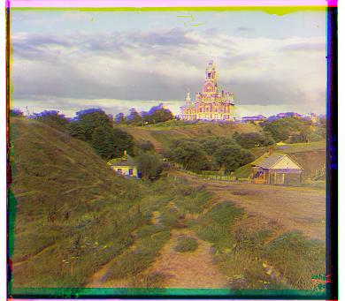
R: (-1, 8); G: (-1, 1); B: (0, 0) – Runtime: 2.21 Seconds
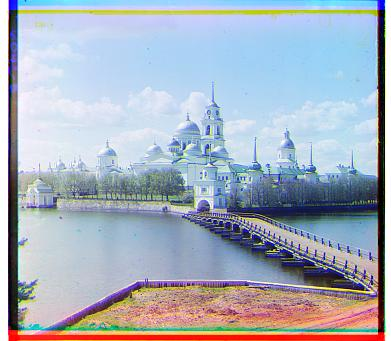
R: (1, 0); G: (0, -6); B: (0, 0) – Runtime: 2.34 Seconds
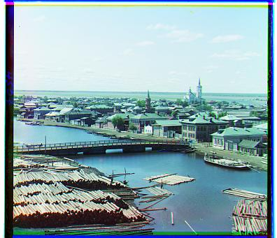
R: (3, 7); G: (2, 3); B: (0, 0) – Runtime: 2.29 Seconds
As we can see, the results for this method were much clearer than the ones before, even though it took a little bit more time.
4 Image Pyramid Method
Now, to align the bigger images, we need to move the images in a more optimized way. Using exhaustion techniques on large images would be really complex and, so, we rely on the Image Pyramid method. We find the best movements for downsized versions of the image. The image is rescaled in factors of 2. We find the x for which \(\frac{imageWidth}{2^x} \le 100\) and start from there, applying the movement in the larger image and calling the same function with a larger exponent. Once the exponent is the minimum exponent (1 for big images and 0 for images with width \(\le 200\)), we stop iterating and return the final channels. Since the best results were the outputs of the NCC algorithm, we will use it instead of the SSD.
We, then, find the following results among the provided large images:
python3 main.py ./icon.tif ./icon_pyramid.jpg --NCC python3 main.py ./melons.tif ./melons_pyramid.jpg --NCC python3 main.py ./harvesters.tif ./harvest_pyramid.jpg --NCC python3 main.py ./emir.tif ./emir_pyramid.jpg --NCC
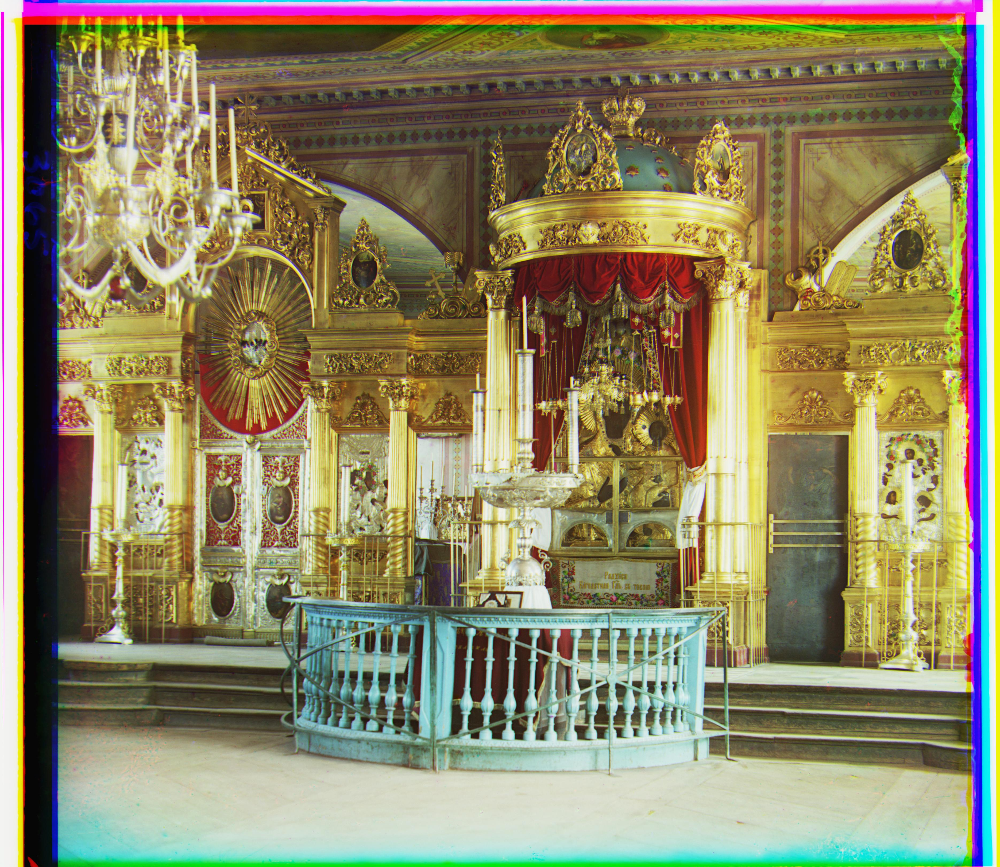
R: (20, 92); G: (16, 44); B: (0, 0) – Runtime: 47.27 Seconds
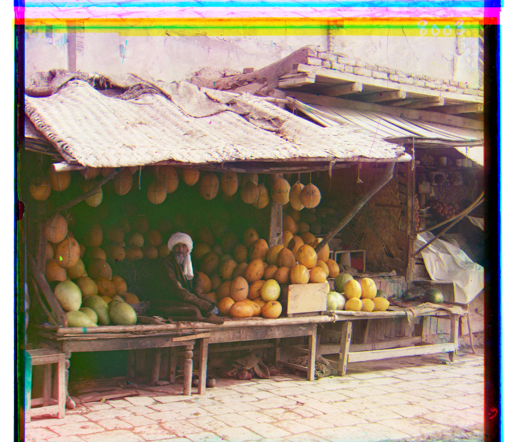
R: (4, 180); G: (4, 84); B: (0, 0) – Runtime: 42.18 Seconds
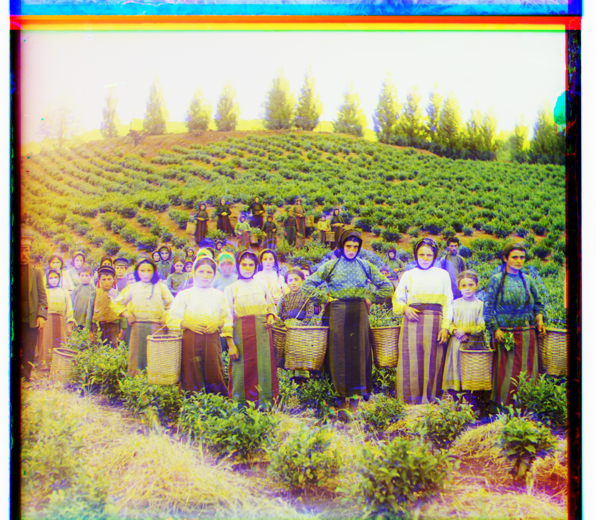
R: (-8, 184); G: (-4, 120); B: (0, 0) – Runtime: 45.59 Seconds
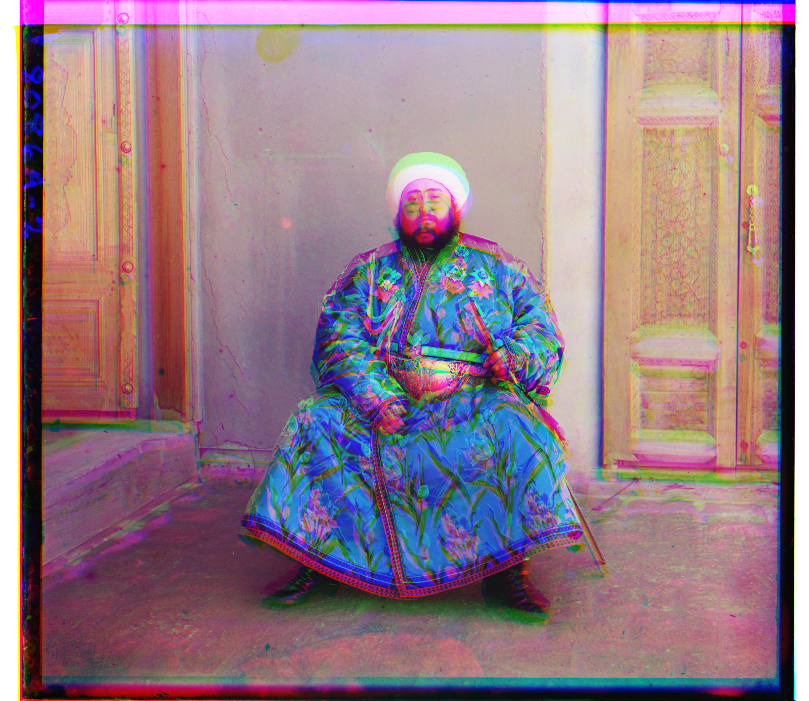
R: (16, 112); G: (8, -4); B: (0, 0) – Runtime: 45.04 Seconds
We can see that both the harvesters image and the emir image don't align well. Looking at the grayscale images, we see that emir has pieces of clothing that vary through color channels, making it harder to align just by their values. Moreover, the harvesters probably moved during the picture exposure, meaning the channels shouldn't have the same values. Thus, finding a new way to evaluate the alignment might be the only way to find the best solutions.
5 Auto Cropping
An evaluation that would work is to identify the black borders and cut them. This will make the images easily alignable. This is achievable by using the Sobel filter on the image and looking for white patterns that represent a border. To do this, I specified that the border has to be at max 10% of the image axis and created a threshold from which the sum of an axis is considered a border. E.g.
import skimage.filters as skfl image = io.imread("./cathedral.jpg") image = skfl.sobel(image) io.imsave("sobel_example.jpg", image)
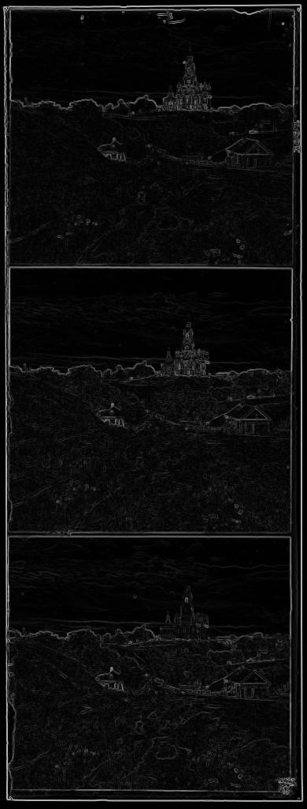
Once we have the borders for each channel, we select the one that crops the most and apply the trimming to every channel. Also, the algorithm I implemented searches the first border from inside to outside the image.
The results are the following:
python3 main.py ./harvesters.tif ./harvest_pyramid_crop.jpg --autocrop --NCC python3 main.py ./emir.tif ./emir_pyramid_crop.jpg --autocrop --NCC
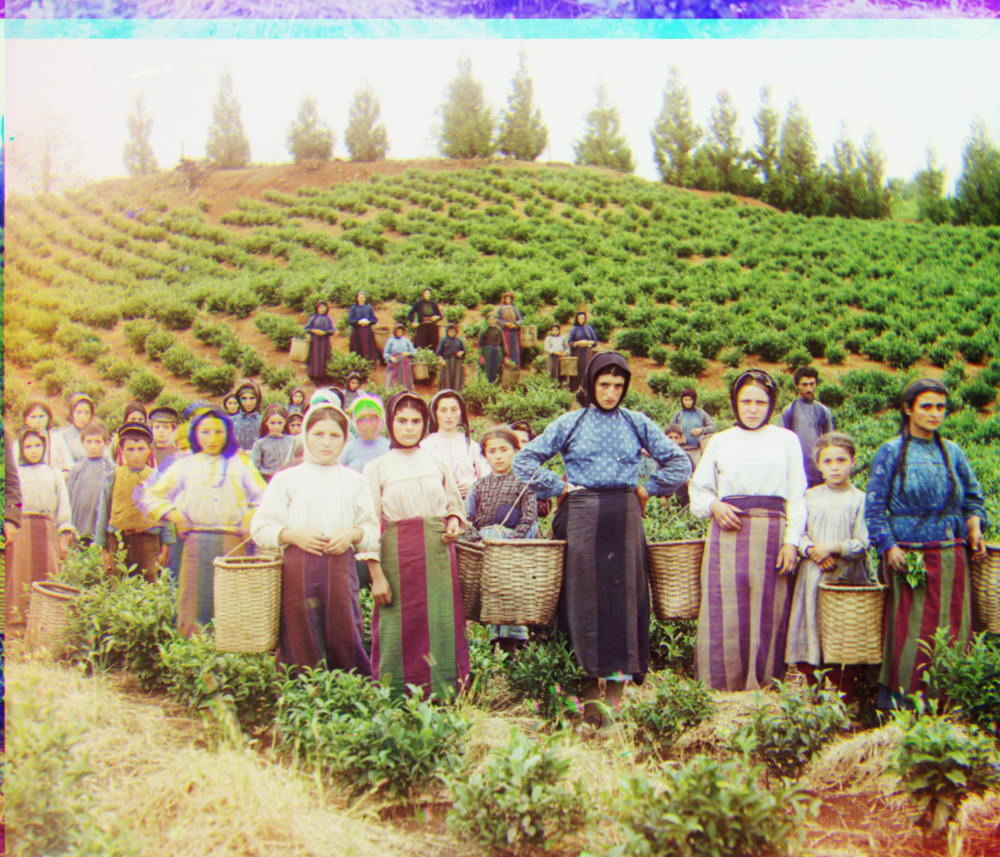
R: (12, 124); G: (16, 60); B: (0, 0) – Runtime: 22.46 Seconds
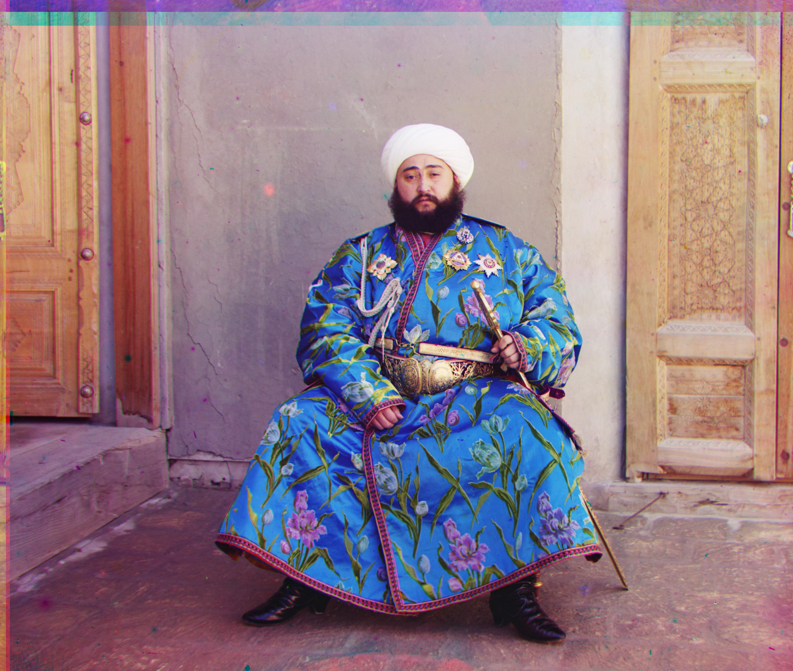
R: (40, 104); G: (24, 48); B: (0, 0) – Runtime: 30.77 Seconds
This isn't, however, the only use for the automatic border cropping. Although, the cropping in the original images removes most border color anomalies, we can still see some leftover borders on the top. This is mainly a result of the np.roll function, which basically shifts the image value, meaning that when some value is moved outside the image, it goes back from the other side. Since the images don't necessarily have the same value after the initial cropping, aligning them might lead to some leftovers from np.roll (values that aren't matched and are just moved around as burdens). Therefore, we can crop the images channels once more after aligning them. This will detect the difference between the actual image and the leftovers. E. g.
python3 main.py ./harvesters.tif ./harvest_pyramid_full_crop.jpg --full-autocrop --NCC python3 main.py ./emir.tif ./emir_pyramid_full_crop.jpg --full-autocrop --NCC
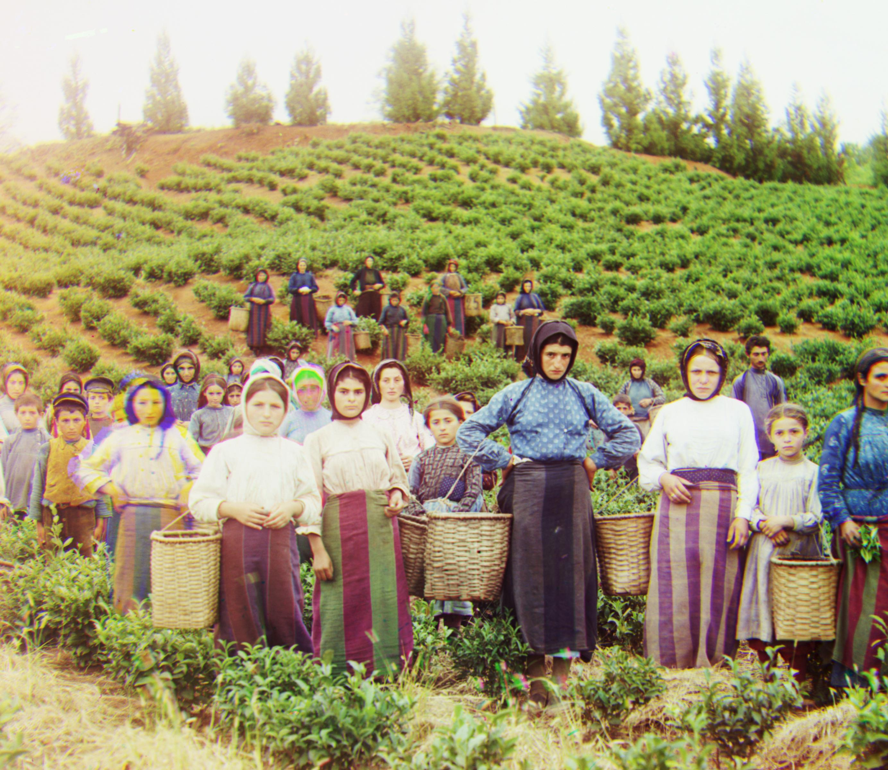
R: (12, 124); G: (16, 60); B: (0, 0) – Runtime: 26.23 Seconds

R: (40, 104); G: (24, 48); B: (0, 0) – Runtime: 29.6 Seconds
However, we do see that there is some loss of information this time around because the algorithm finds false positive borders. In spite of this, the results are much better.
6 Final Conclusions and Results
Considering all the results, it is easy to conclude that the Pyramid Method with full (original and final images) auto-cropping results in the best pictures without losing much information and removing all of the colored borders anomaly. These results hold for the small sized images as well.
Also, as it turns out, the SSD value function ends up giving a result as good as the NCC. Thus, I chose to use it for the final results as it reduces runtime greatly.
These are the final executions:
python3 main.py ./cathedral.jpg ./cathedral_final.jpg --full-autocrop python3 main.py ./monastery.jpg ./monastery_final.jpg --full-autocrop python3 main.py ./tobolsk.jpg ./tobolsk_final.jpg --full-autocrop python3 main.py ./melons.tif ./melons_final.jpg --full-autocrop python3 main.py ./lady.tif ./lady_final.jpg --full-autocrop python3 main.py ./onion_church.tif ./onion_final.jpg --full-autocrop python3 main.py ./icon.tif ./icon_final.jpg --full-autocrop python3 main.py ./harvesters.tif ./harvest_final.jpg --full-autocrop python3 main.py ./emir.tif ./emir_final.jpg --full-autocrop
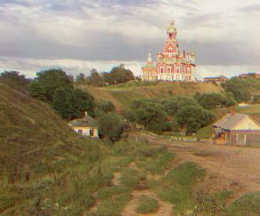
R: (2, 10); G: (2, 4); B: (0, 0) – Runtime: 0.29 Seconds
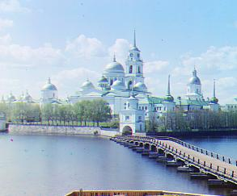
R: (2, 4); G: (2, -2); B: (0, 0) – Runtime: 0.29 Seconds
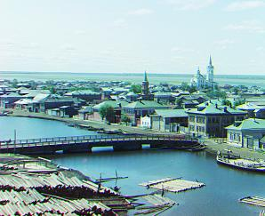
R: (2, 6); G: (2, 2); B: (0, 0) – Runtime: 0.29 Seconds
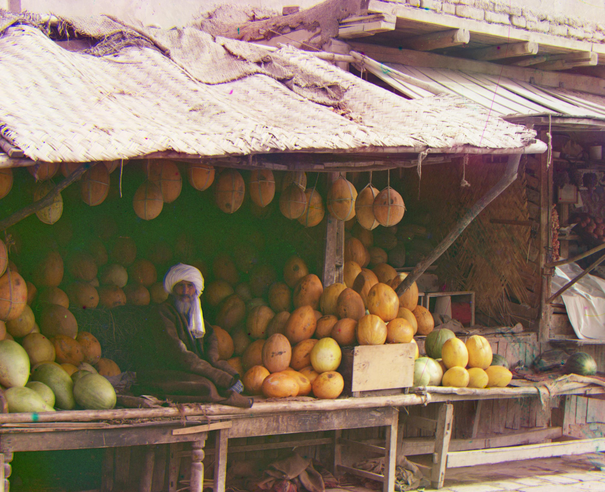
R: (16, 180); G: (12, 84); B: (0, 0) – Runtime: 17.53 Seconds
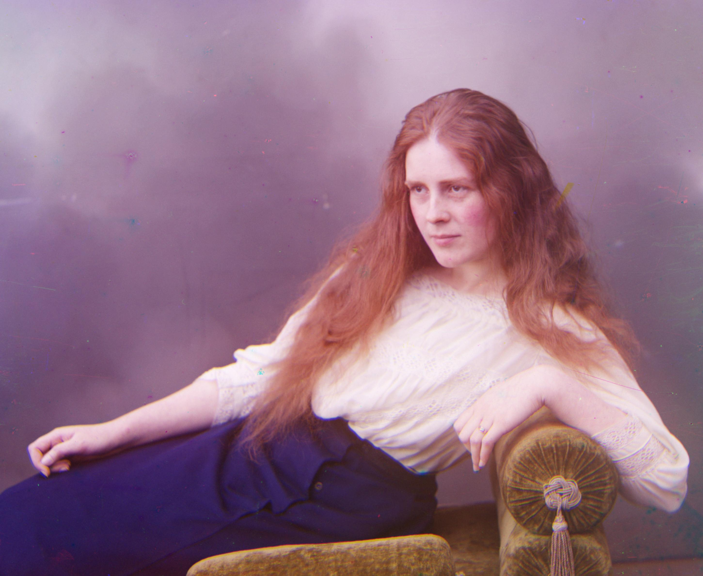
R: (12, 108); G: (8, 48); B: (0, 0) – Runtime: 16.75 Seconds
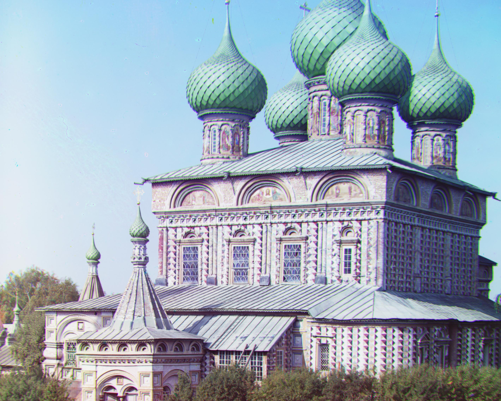
R: (36, 108); G: (24, 52); B: (0, 0) – Runtime: 16.93 Seconds
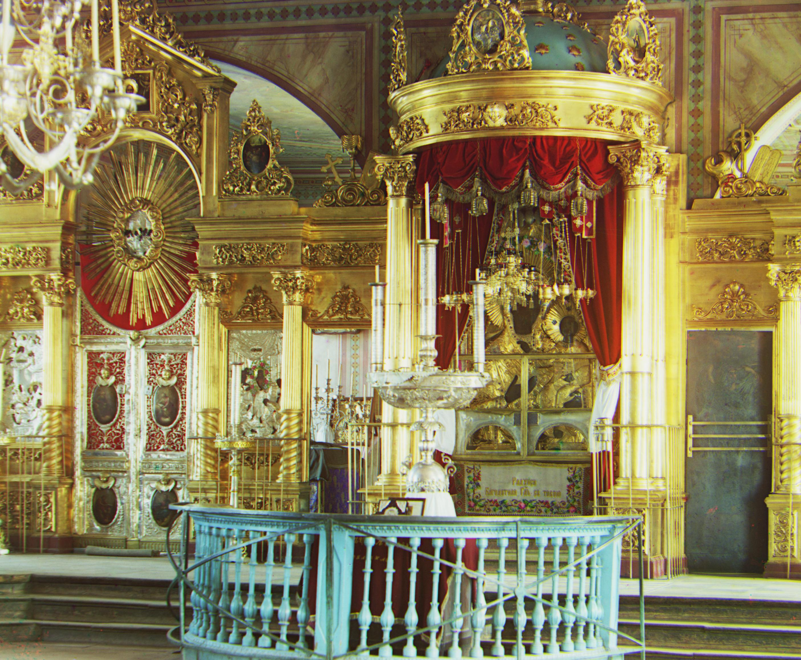
R: (20, 88); G: (16, 40); B: (0, 0) – Runtime: 18.08 Seconds

R: (12, 124); G: (16, 60); B: (0, 0) – Runtime: 13.7 Seconds
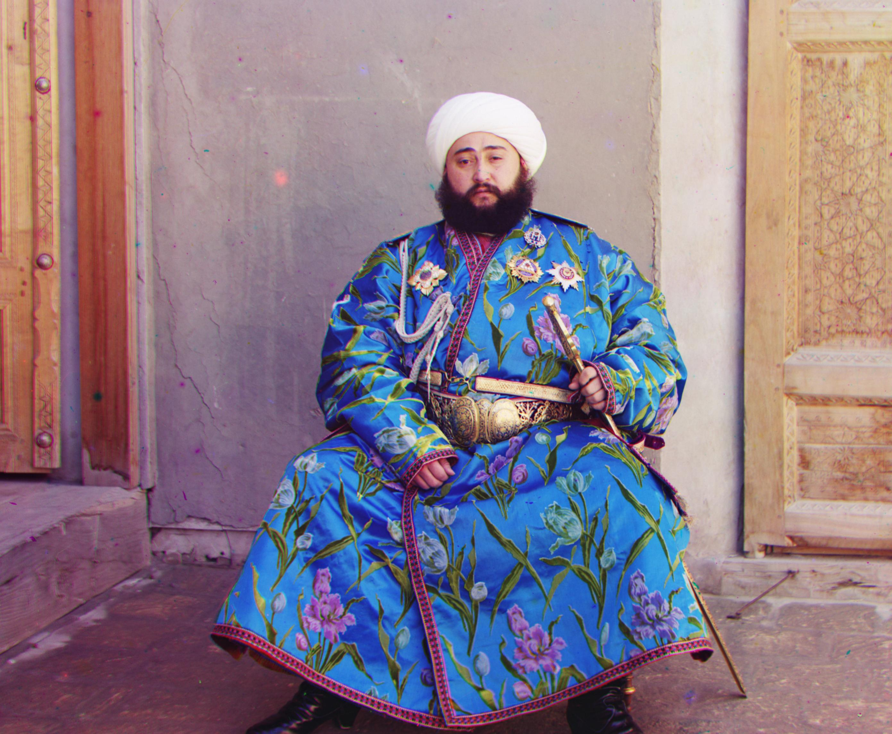
R: (40, 104); G: (24, 48); B: (0, 0) – Runtime: 17.25 Seconds